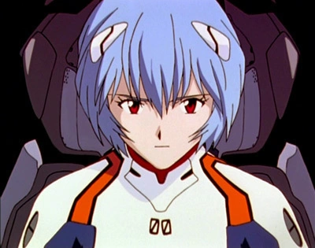
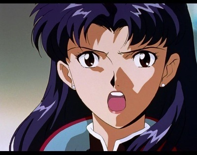
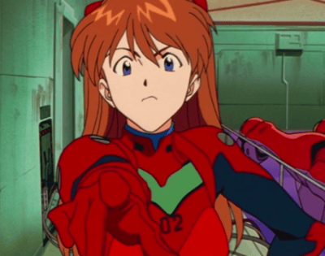
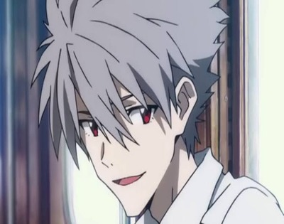

About
Neon Genesis Evangelion (Japanese: 新世紀エヴァンゲリオン, Hepburn: Shinseiki Evangerion; lit.'New Century Evangelion' in Japanese and lit. 'New Beginning Gospel' in Greek), also known as simply Evangelion or Eva, is a Japanese anime television series produced by Gainax and Tatsunoko Production, and directed by Hideaki Anno. It was broadcast on TV Tokyo and its affiliates from October 1995 to March 1996. The story, set fifteen years after a worldwide cataclysm in the futuristic fortified city of Tokyo-3, follows Shinji Ikari, a teenage boy who is recruited by his father Gendo Ikari to the mysterious organization Nerv. Shinji must pilot an Evangelion, a giant biomechanical mecha, to fight beings known as Angels.
My Fav Evangelion Characters!!
-

Rei Ayanami
Rei Ayanami (綾波 レイ/アヤナミ レイ), Ayanami Rei?) is a fictional character from the Neon Genesis Evangelion franchise. She is the First Child (referred as the First Children in the Japanese version), the pilot of Evangelion Unit-00 and one of the central characters.
-

Misato Katsuragi
Misato Katsuragi (葛城 ミサト, Katsuragi Misato?) is one of the main characters from the Neon Genesis Evangelion franchise. She is the operations director at NERV, initially with the rank of captain; she is later promoted to major. Her duties at NERV include acting as a field commander for the EVA pilots, issuing orders and relaying battle strategies as well as processing input from Ritsuko Akagi and the technicians monitoring the EVAS. She also handles many bureaucratic aspects of NERV's operations.
-

Asuka Langley Sohryu
Asuka Langley Sohryu (惣流・アスカ・ラングレー, Sōryū Asuka Rangurē?) is a 14-year-old fictional character from the Neon Genesis Evangelion franchise and one of the main female characters. Asuka is designated as the Second Child ("Second Children" in the original Japanese versions) of the Evangelion Project and pilots the Evangelion Unit-02. Her surname is romanized as Soryu in the English manga and Sohryu in the English version of the TV series, the English version of the film, and on GAINAX's website.
-

Kaworu Nagisa
Kaworu Nagisa (渚 カヲル, Nagisa Kaworu?), also known as the Angel Tabris (タブリス, Taburisu?), is a fictional character from the Neon Genesis Evangelion franchise. He is the Fifth Child and the seventeenth Angel. He is preceded by Armisael.
Where to Watch